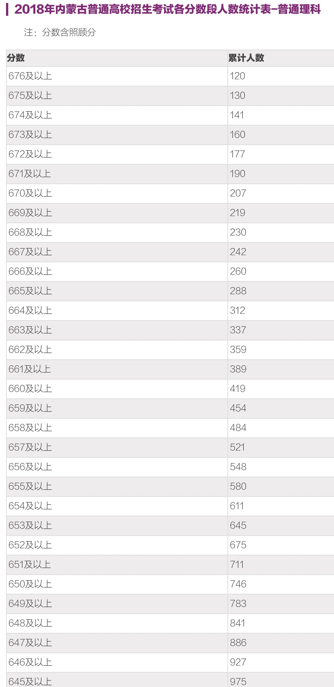
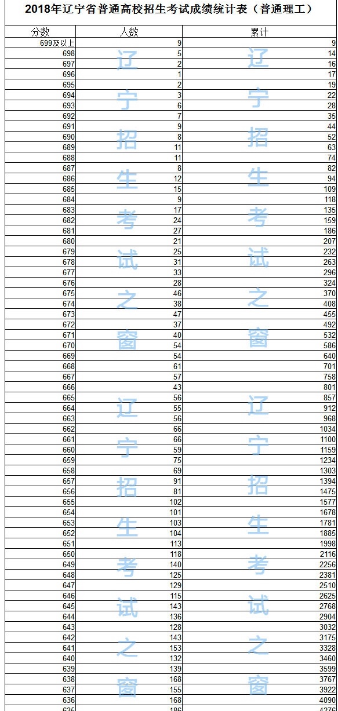
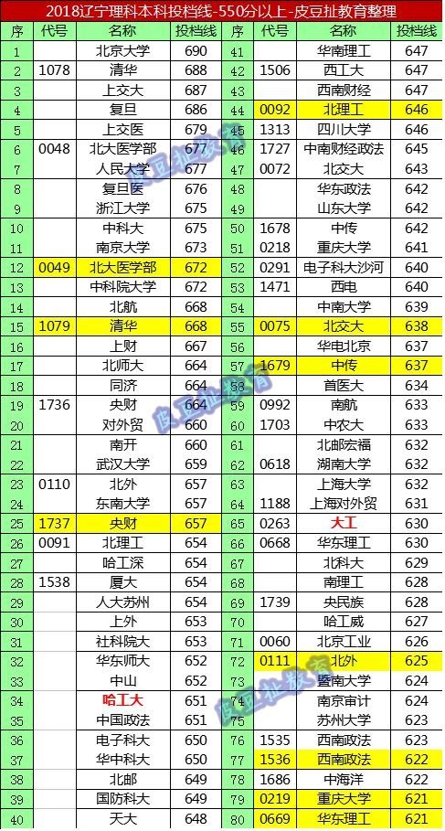
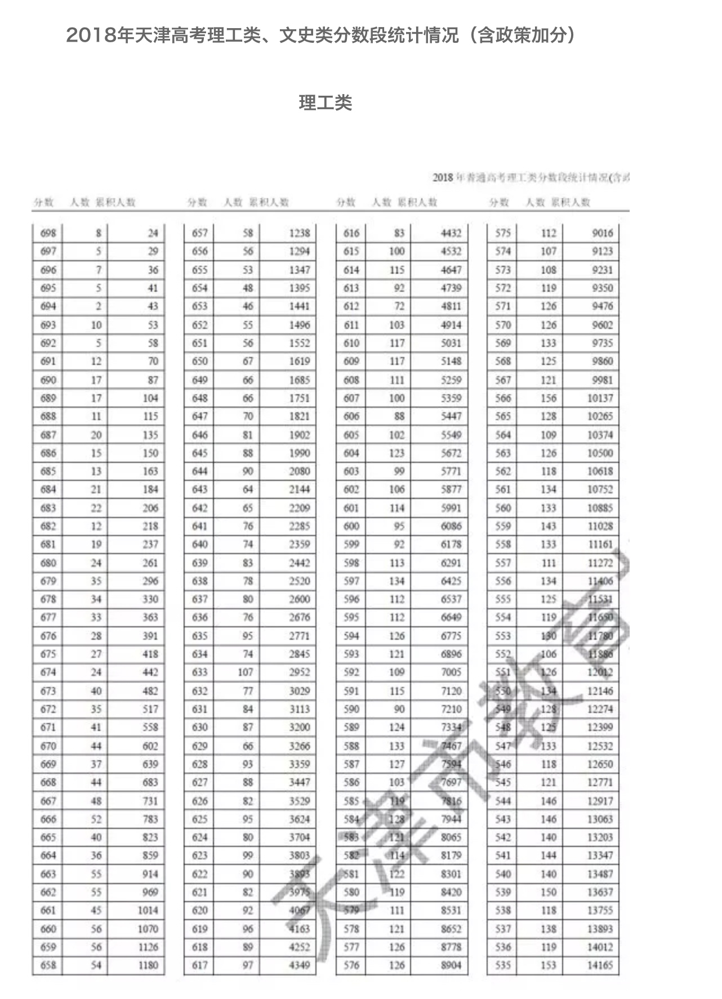

从数据看北京教育资源
最近高考，想到自己也到了而立之年，原本很远的事情慢慢好像也不是那么遥不可及了，遂分析下当前的教育资源。老婆是北京户口，现在各地户口整体比较放松，非北京地区我可以选的余地还比较大，综合生活可行性来看，内蒙、天津、沈阳是候选集，下面比较下这三地和北京的教育资源分析：
内蒙2007年高考人数23.9w，我当时理科排名第700，就算内蒙人才密度低，和北京的密度水平差10倍，那我在北京高考应该也能达到前2.93%；辽宁省其实比内蒙不会强太多，算内蒙密度的2倍，天津算内蒙密度的3倍，那就是0.586%和0.879%。
下面按比例比较下四地的高考情况：
1. 内蒙古
内蒙古2018年16.3万人高考，按比例那就是477名：就是650分到658之间

2. 辽宁
在辽宁，按照2018年18.5w高考情况，2～3倍人才密度1083～1625名，654～661分。

那在辽宁能上什么学校呢？

3. 天津市
天津按照内蒙3倍到4倍的人才密度吧，0.8784%到1.1712%，483-644，能达到668分。
天津2018理科

4. 北京
“北京考大学很容易”，似乎是13亿人的基本常识，而这也是促使全国精英前赴后继涌入北京，为了一纸北京户口打破头的重要原因
既然北京高考如此容易，为何北京家长要疯抢二十万一平的老破小学区房，为何海淀西城家长要为孩子每年投入一二十万的课外辅导费？他们是矫情还是有说不出的苦衷？
本文将通过大量数据来揭晓北京基础教育围城的真相
首先，“北京考大学很容易”，这个论点有足够多的支撑理由，我们先来看一看，2016年每一个18岁北京户籍娃相比较全国平均水平的升学率优势情况：
北京18岁户籍娃比全国18岁娃的升学优势
北大+清华 17倍
985 2.7倍
211 2.3倍
一本 3倍
清华北大每年毕业差不多2万本硕博，去除掉本校直升的，再算上50%的留京率，每年北京留下六七千清华北大本硕博差不多吧？”（清北留京率已经下降到50%了）
“北京每年有六七百个清北本科名额，但是每年留京六七千清北毕业生，我们极端点算，哪怕清北世袭罔替，拒绝非清北毕业生的娃上清北，平均是不是也得10个清北留京毕业生的娃才能上一个清北？”
每年全国985大学本硕博毕业30多万人，到北京工作的大约20%，也就是五六万（http://bbsnew.netbig.com/thread-2685545-1-1.html）。但北京每年的一本名额只有一万多个，也就是说，哪怕拒绝非985家长的娃考一本，那北京的985家长们，也得4个里面淘汰3个，才能让娃进一本
北京每年诞生15万个北京户口的娃，你有没有信心在这些同级家长里面，资产、收入、学历等综合排名前3万，也就是前20%？
2016年，北京理科第1.1万名能上太原理工。你作为家长，排北京同级前3万都困难的话，你咋有信心让你娃成为top 1.1万？
北京每年新增的985本硕博数量和北京的高中录取人数差不多
根据《2015年中国留学白皮书》，已经回国的180万海归中，41.6%在北京工作，而那些希望归国的海归中，计划在北京工作的是29.17%，也就是说，现在每年回国大概40多万海归，其中30%都计划在北京工作。
现在每年美国top10大学的本硕博回京的我估计就有几百上千个，你也知道，北京的高校，甚至北京的知名中学，没有海外名校博士都很难进的
你对高考的映像是不是还停留在你高考的那会儿，也就是10多年前？那会儿北京的同学不都玩着玩着就考北大了么”
05年高考的娃，是85后出生的。那会儿，北京家长的主流还是学历不高的老北京，只有少量高学历新北京。 80年代大学生很少，而且很难留京。
1990年的时候，北京第四次人口普查，受过大专及以上教育的人口，占总人口的比例是9.3%”
2015年，北京常住人口中，本科学历的比例是18.1%，硕士的比例是4.5%”
中老年人口的学历是基本不变的，他们会长时间作为分母。而新增的本科硕士，基本都是育龄年轻人口，其中，生娃主力25-35岁的人口，对应的是05-15年留京的这波。在这10年里，北京本科学历人口乘以2.33倍，增加了近230万，研究生学历人口乘以3.45倍，增加了近70万——他们基本都是育龄年轻人
本科人口 研究生人口
2005年 168.3万 28.1万
2015年 393.8万 97万
变化率 2.33倍 3.45倍
他们的娃有许多是不在北京高考的，但他们的娃会在北京上小学初中，他们会参与竞争北京的基础教育资源”
小明：“也就是说，虽然小学中学竞争压力很大，但高考还是会比较轻松？”
塞冬：“不一定，有能力拿到北京户口的毕业生，其平均水平又高了一截。前些年，北京的户口是相对宽松的，05-10年，平均每年从外地净迁入近12万京户，10-15年收紧了，平均每年也是净迁入近10万京户
户籍人口增量 自然净增 机械净增（外地户口净迁入）
05-10年 77.1万 18.1万 59万
10-15年 87.4万 39.5万 47.9万
小明：“那确实不少，每年10-12万？”
每年10-12万外地人获得北京户口，其中大多数都是高学历、高收入、高资产人群，但每年北京的一本名额只有1.5-2万人。也就是说，哪怕一本名额不给北京本地人，只给这些获得京户的新增外地精英，竞争也是非常惨烈的
政策是有很大惯性的，举个例子：1990年北京户籍出生人口14万，是1998年的2倍，但2008年北京有1.97万个一本，2016年有1.64万个，从历史上来看，京户小孩出生人数翻番，但一本指标却变化不大
北京每年留下全国50%的清北本硕博和20%的985本硕博，但北京每年高考的时候，只提供全国10%的清北本科名额和全国2%的985本科名额。北京每年留下的985本硕博，比北京高中招生人数还多。就以你小明为例吧，你作为程序员，在北京的社会地位，和送快递的没啥两样，送快递的一个月也一万多。因此，你留在北京，和送快递的一样，小孩止步于职高才是常态，考上二本就算不错了。你回到老家，你的学历就是人上人，可以一路省会顶级单位、省会好房子、省会好学校，你的小孩仍然大概率考上好大学
{kind=link}
![发布器encode](sslocal://send_thread?from_where=31&show_et_status=00000&post_content=%23%e5%90%8e%e5%ae%ab%e9%87%8c%e7%9a%84%e9%81%bf%e5%ad%90%e7%9c%9f%e7%9b%b8%23+%e5%93%a6%e7%a0%b4%e5%a9%86%e5%a9%86%e7%a0%b47%e5%90%8d%40%e9%99%88%e4%bd%b3%e7%9a%9e+POS%e6%88%91%e5%8e%bb%e6%b4%97%e6%bc%b1%e5%a9%86%e5%a9%86%e5%93%a6%e4%ba%b2%23%e5%9b%be%e7%89%87%23+%e7%a0%b4%e5%a9%86%e5%a9%86%e7%a0%b4%e5%a9%86%e5%a9%86%40%e8%96%9b%e5%ae%9a%e8%b0%94%e7%9a%84%e7%8c%ab%e8%9c%9c+%e7%9d%a1%e5%92%af%e7%a0%b4%e5%a9%86%e5%a9%86%e5%a9%86%e5%a9%86%e5%b0%b1%e6%98%af%e5%b0%b1&post_content_rich_span=%7b%22links%22%3a%5b%7b%22start%22%3a0%2c%22length%22%3a10%2c%22link%22%3a%22sslocal%3a%2f%2fconcern%3fcategory_name%3dprofile_all%5cu0026cid%3d1612215148149768%5cu0026enter_from%3dclick_profile_all%5cu0026tab_sname%3dthread%22%2c%22type%22%3a2%2c%22text%22%3a%22%22%2c%22id%22%3a1612215148149768%2c%22id_type%22%3a0%7d%2c%7b%22start%22%3a18%2c%22length%22%3a4%2c%22link%22%3a%22sslocal%3a%2f%2fprofile%3fcategory_name%3dprofile_all%5cu0026enter_from%3dclick_profile_all%5cu0026from_page%3dat_user_profile%5cu0026uid%3d8439729777%22%2c%22type%22%3a1%2c%22text%22%3a%22%22%2c%22id%22%3a8439729777%2c%22id_type%22%3a0%7d%2c%7b%22start%22%3a34%2c%22length%22%3a4%2c%22link%22%3a%22sslocal%3a%2f%2fconcern%3fcategory_name%3dprofile_all%5cu0026cid%3d6226114247017892353%5cu0026enter_from%3dclick_profile_all%5cu0026tab_sname%3dthread%22%2c%22type%22%3a2%2c%22text%22%3a%22%22%2c%22id%22%3a6226114247017892353%2c%22id_type%22%3a0%7d%2c%7b%22start%22%3a45%2c%22length%22%3a7%2c%22link%22%3a%22sslocal%3a%2f%2fprofile%3fcategory_name%3dprofile_all%5cu0026enter_from%3dclick_profile_all%5cu0026from_page%3dat_user_profile%5cu0026uid%3d105181786798%22%2c%22type%22%3a1%2c%22text%22%3a%22%22%2c%22id%22%3a105181786798%2c%22id_type%22%3a0%7d%5d%7d&post_images=%5b%7b%22uri%22%3a+%22tos-cn-i-0022%2fe2c7fecb42f84b76b7c1a1a399280ff4%22%2c%22url%22%3a+%22http%3a%2f%2fsf3-ttcdn-tos.pstatp.com%2fimg%2ftos-cn-i-0022%2fe2c7fecb42f84b76b7c1a1a399280ff4%7e200x200_c1.jpeg%22%7d%2c+%7b%22uri%22%3a+%22tos-cn-i-0022%2f1fbf91d10be14f6993e88184f7d05bf8%22%2c%22url%22%3a+%22http%3a%2f%2fsf1-ttcdn-tos.pstatp.com%2fimg%2ftos-cn-i-0022%2f1fbf91d10be14f6993e88184f7d05bf8%7e400x261_c1.jpeg%22%7d%5d){kind=link}
![post_image 10图](sslocal://send_thread?from_where=31&show_et_status=00000&post_content=%23%e5%90%8e%e5%ae%ab%e9%87%8c%e7%9a%84%e9%81%bf%e5%ad%90%e7%9c%9f%e7%9b%b8%23+%e5%93%a6%e7%a0%b4%e5%a9%86%e5%a9%86%e7%a0%b47%e5%90%8d%40%e9%99%88%e4%bd%b3%e7%9a%9e+POS%e6%88%91%e5%8e%bb%e6%b4%97%e6%bc%b1%e5%a9%86%e5%a9%86%e5%93%a6%e4%ba%b2%23%e5%9b%be%e7%89%87%23+%e7%a0%b4%e5%a9%86%e5%a9%86%e7%a0%b4%e5%a9%86%e5%a9%86%40%e8%96%9b%e5%ae%9a%e8%b0%94%e7%9a%84%e7%8c%ab%e8%9c%9c+%e7%9d%a1%e5%92%af%e7%a0%b4%e5%a9%86%e5%a9%86%e5%a9%86%e5%a9%86%e5%b0%b1%e6%98%af%e5%b0%b1http%3a%2f%2fwap.cac.gov.cn%2f%e8%b1%86%e6%9e%9c%e7%be%8e%e9%a3%9f&post_content_rich_span=%7b%22links%22%3a%5b%7b%22start%22%3a0%2c%22length%22%3a10%2c%22link%22%3a%22sslocal%3a%2f%2fconcern%3fcategory_name%3dprofile_all%5cu0026cid%3d1612215148149768%5cu0026enter_from%3dclick_profile_all%5cu0026tab_sname%3dthread%22%2c%22type%22%3a2%2c%22text%22%3a%22%22%2c%22id%22%3a1612215148149768%2c%22id_type%22%3a0%7d%2c%7b%22start%22%3a18%2c%22length%22%3a4%2c%22link%22%3a%22sslocal%3a%2f%2fprofile%3fcategory_name%3dprofile_all%5cu0026enter_from%3dclick_profile_all%5cu0026from_page%3dat_user_profile%5cu0026uid%3d8439729777%22%2c%22type%22%3a1%2c%22text%22%3a%22%22%2c%22id%22%3a8439729777%2c%22id_type%22%3a0%7d%2c%7b%22start%22%3a34%2c%22length%22%3a4%2c%22link%22%3a%22sslocal%3a%2f%2fconcern%3fcategory_name%3dprofile_all%5cu0026cid%3d6226114247017892353%5cu0026enter_from%3dclick_profile_all%5cu0026tab_sname%3dthread%22%2c%22type%22%3a2%2c%22text%22%3a%22%22%2c%22id%22%3a6226114247017892353%2c%22id_type%22%3a0%7d%2c%7b%22start%22%3a45%2c%22length%22%3a7%2c%22link%22%3a%22sslocal%3a%2f%2fprofile%3fcategory_name%3dprofile_all%5cu0026enter_from%3dclick_profile_all%5cu0026from_page%3dat_user_profile%5cu0026uid%3d105181786798%22%2c%22type%22%3a1%2c%22text%22%3a%22%22%2c%22id%22%3a105181786798%2c%22id_type%22%3a0%7d%2c%7b%22start%22%3a63%2c%22length%22%3a22%2c%22link%22%3a%22sslocal%3a%2f%2fwebview%3fcategory_name%3dprofile_all%5cu0026disable_hash%3d1%5cu0026disable_tt_referer%3d1%5cu0026disable_tt_ua%3d1%5cu0026enter_from%3dclick_profile_all%5cu0026url%3dhttp%253A%252F%252Fwap.cac.gov.cn%252F%22%2c%22type%22%3a3%2c%22text%22%3a%22%e7%bd%91%e9%a1%b5%e9%93%be%e6%8e%a5%22%2c%22id%22%3a0%2c%22id_type%22%3a0%7d%2c%7b%22start%22%3a85%2c%22length%22%3a4%2c%22link%22%3a%22sslocal%3a%2f%2fmicroapp%3fapp_id%3dtt7f6e09d3e044c6ae%5cu0026meta%3d%257B%2522icon%2522%253A%2522https%253A%255C%252F%255C%252Fsf3-ttcdn-tos.pstatp.com%255C%252Fimg%255C%252Fdeveloper%255C%252Fapp%255C%252Ftt7f6e09d3e044c6ae%255C%252Ficonb7eae%7e144x144.jpeg%2522%252C%2522name%2522%253A%2522%25E8%25B1%2586%25E6%259E%259C%25E7%25BE%258E%25E9%25A3%259F%2522%252C%2522orientation%2522%253A0%257D%5cu0026launch_from%3dpublish_weitoutiao%5cu0026start_page%3dpages%252Fhome%252Fhome%5cu0026category_name%3dprofile_all%5cu0026enter_from%3dclick_profile_all%22%2c%22type%22%3a6%2c%22text%22%3a%22%e8%b1%86%e6%9e%9c%e7%be%8e%e9%a3%9f%22%2c%22id%22%3a0%2c%22id_type%22%3a0%7d%5d%7d&post_images=%5b%7b%22uri%22%3a+%22tos-cn-i-0022%2fe2c7fecb42f84b76b7c1a1a399280ff4%22%2c%22url%22%3a+%22http%3a%2f%2fsf3-ttcdn-tos.pstatp.com%2fimg%2ftos-cn-i-0022%2fe2c7fecb42f84b76b7c1a1a399280ff4%7e200x200_c1.jpeg%22%7d%2c+%7b%22uri%22%3a+%22tos-cn-i-0022%2f1fbf91d10be14f6993e88184f7d05bf8%22%2c%22url%22%3a+%22http%3a%2f%2fsf1-ttcdn-tos.pstatp.com%2fimg%2ftos-cn-i-0022%2f1fbf91d10be14f6993e88184f7d05bf8%7e400x261_c1.jpeg%22%7d%2c+%7b%22uri%22%3a+%22tos-cn-i-0022%2f1fbf91d10be14f6993e88184f7d05bf8%22%2c%22url%22%3a+%22http%3a%2f%2fsf1-ttcdn-tos.pstatp.com%2fimg%2ftos-cn-i-0022%2f1fbf91d10be14f6993e88184f7d05bf8%7e400x261_c1.jpeg%22%7d%2c+%7b%22uri%22%3a+%22tos-cn-i-0022%2f1fbf91d10be14f6993e88184f7d05bf8%22%2c%22url%22%3a+%22http%3a%2f%2fsf1-ttcdn-tos.pstatp.com%2fimg%2ftos-cn-i-0022%2f1fbf91d10be14f6993e88184f7d05bf8%7e400x261_c1.jpeg%22%7d%2c+%7b%22uri%22%3a+%22tos-cn-i-0022%2f1fbf91d10be14f6993e88184f7d05bf8%22%2c%22url%22%3a+%22http%3a%2f%2fsf1-ttcdn-tos.pstatp.com%2fimg%2ftos-cn-i-0022%2f1fbf91d10be14f6993e88184f7d05bf8%7e400x261_c1.jpeg%22%7d%2c+%7b%22uri%22%3a+%22tos-cn-i-0022%2f1fbf91d10be14f6993e88184f7d05bf8%22%2c%22url%22%3a+%22http%3a%2f%2fsf1-ttcdn-tos.pstatp.com%2fimg%2ftos-cn-i-0022%2f1fbf91d10be14f6993e88184f7d05bf8%7e400x261_c1.jpeg%22%7d%2c+%7b%22uri%22%3a+%22tos-cn-i-0022%2f1fbf91d10be14f6993e88184f7d05bf8%22%2c%22url%22%3a+%22http%3a%2f%2fsf1-ttcdn-tos.pstatp.com%2fimg%2ftos-cn-i-0022%2f1fbf91d10be14f6993e88184f7d05bf8%7e400x261_c1.jpeg%22%7d%2c+%7b%22uri%22%3a+%22tos-cn-i-0022%2f1fbf91d10be14f6993e88184f7d05bf8%22%2c%22url%22%3a+%22http%3a%2f%2fsf1-ttcdn-tos.pstatp.com%2fimg%2ftos-cn-i-0022%2f1fbf91d10be14f6993e88184f7d05bf8%7e400x261_c1.jpeg%22%7d%2c+%7b%22uri%22%3a+%22tos-cn-i-0022%2f1fbf91d10be14f6993e88184f7d05bf8%22%2c%22url%22%3a+%22http%3a%2f%2fsf1-ttcdn-tos.pstatp.com%2fimg%2ftos-cn-i-0022%2f1fbf91d10be14f6993e88184f7d05bf8%7e400x261_c1.jpeg%22%7d%2c+%7b%22uri%22%3a+%22tos-cn-i-0022%2f1fbf91d10be14f6993e88184f7d05bf8%22%2c%22url%22%3a+%22http%3a%2f%2fsf1-ttcdn-tos.pstatp.com%2fimg%2ftos-cn-i-0022%2f1fbf91d10be14f6993e88184f7d05bf8%7e400x261_c1.jpeg%22%7d%5d){kind=link}
![post_image 空](sslocal://send_thread?from_where=31&show_et_status=00000&post_content=%23%e5%90%8e%e5%ae%ab%e9%87%8c%e7%9a%84%e9%81%bf%e5%ad%90%e7%9c%9f%e7%9b%b8%23+%e5%93%a6%e7%a0%b4%e5%a9%86%e5%a9%86%e7%a0%b47%e5%90%8d%40%e9%99%88%e4%bd%b3%e7%9a%9e+POS%e6%88%91%e5%8e%bb%e6%b4%97%e6%bc%b1%e5%a9%86%e5%a9%86%e5%93%a6%e4%ba%b2%23%e5%9b%be%e7%89%87%23+%e7%a0%b4%e5%a9%86%e5%a9%86%e7%a0%b4%e5%a9%86%e5%a9%86%40%e8%96%9b%e5%ae%9a%e8%b0%94%e7%9a%84%e7%8c%ab%e8%9c%9c+%e7%9d%a1%e5%92%af%e7%a0%b4%e5%a9%86%e5%a9%86%e5%a9%86%e5%a9%86%e5%b0%b1%e6%98%af%e5%b0%b1http%3a%2f%2fwap.cac.gov.cn%2f%e8%b1%86%e6%9e%9c%e7%be%8e%e9%a3%9f&post_content_rich_span=%7b%22links%22%3a%5b%7b%22start%22%3a0%2c%22length%22%3a10%2c%22link%22%3a%22sslocal%3a%2f%2fconcern%3fcategory_name%3dprofile_all%5cu0026cid%3d1612215148149768%5cu0026enter_from%3dclick_profile_all%5cu0026tab_sname%3dthread%22%2c%22type%22%3a2%2c%22text%22%3a%22%22%2c%22id%22%3a1612215148149768%2c%22id_type%22%3a0%7d%2c%7b%22start%22%3a18%2c%22length%22%3a4%2c%22link%22%3a%22sslocal%3a%2f%2fprofile%3fcategory_name%3dprofile_all%5cu0026enter_from%3dclick_profile_all%5cu0026from_page%3dat_user_profile%5cu0026uid%3d8439729777%22%2c%22type%22%3a1%2c%22text%22%3a%22%22%2c%22id%22%3a8439729777%2c%22id_type%22%3a0%7d%2c%7b%22start%22%3a34%2c%22length%22%3a4%2c%22link%22%3a%22sslocal%3a%2f%2fconcern%3fcategory_name%3dprofile_all%5cu0026cid%3d6226114247017892353%5cu0026enter_from%3dclick_profile_all%5cu0026tab_sname%3dthread%22%2c%22type%22%3a2%2c%22text%22%3a%22%22%2c%22id%22%3a6226114247017892353%2c%22id_type%22%3a0%7d%2c%7b%22start%22%3a45%2c%22length%22%3a7%2c%22link%22%3a%22sslocal%3a%2f%2fprofile%3fcategory_name%3dprofile_all%5cu0026enter_from%3dclick_profile_all%5cu0026from_page%3dat_user_profile%5cu0026uid%3d105181786798%22%2c%22type%22%3a1%2c%22text%22%3a%22%22%2c%22id%22%3a105181786798%2c%22id_type%22%3a0%7d%2c%7b%22start%22%3a63%2c%22length%22%3a22%2c%22link%22%3a%22sslocal%3a%2f%2fwebview%3fcategory_name%3dprofile_all%5cu0026disable_hash%3d1%5cu0026disable_tt_referer%3d1%5cu0026disable_tt_ua%3d1%5cu0026enter_from%3dclick_profile_all%5cu0026url%3dhttp%253A%252F%252Fwap.cac.gov.cn%252F%22%2c%22type%22%3a3%2c%22text%22%3a%22%e7%bd%91%e9%a1%b5%e9%93%be%e6%8e%a5%22%2c%22id%22%3a0%2c%22id_type%22%3a0%7d%2c%7b%22start%22%3a85%2c%22length%22%3a4%2c%22link%22%3a%22sslocal%3a%2f%2fmicroapp%3fapp_id%3dtt7f6e09d3e044c6ae%5cu0026meta%3d%257B%2522icon%2522%253A%2522https%253A%255C%252F%255C%252Fsf3-ttcdn-tos.pstatp.com%255C%252Fimg%255C%252Fdeveloper%255C%252Fapp%255C%252Ftt7f6e09d3e044c6ae%255C%252Ficonb7eae%7e144x144.jpeg%2522%252C%2522name%2522%253A%2522%25E8%25B1%2586%25E6%259E%259C%25E7%25BE%258E%25E9%25A3%259F%2522%252C%2522orientation%2522%253A0%257D%5cu0026launch_from%3dpublish_weitoutiao%5cu0026start_page%3dpages%252Fhome%252Fhome%5cu0026category_name%3dprofile_all%5cu0026enter_from%3dclick_profile_all%22%2c%22type%22%3a6%2c%22text%22%3a%22%e8%b1%86%e6%9e%9c%e7%be%8e%e9%a3%9f%22%2c%22id%22%3a0%2c%22id_type%22%3a0%7d%5d%7d&post_images=%5b%5d){kind=link}
Copyright © 2015 Powered by MWeb, Theme used GitHub CSS.